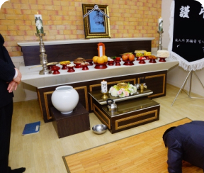
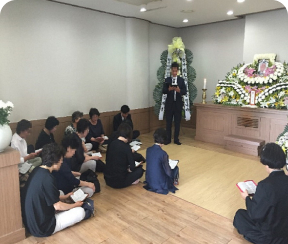
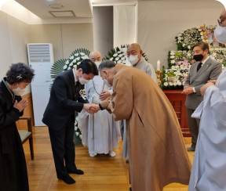
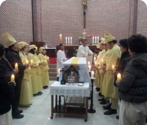
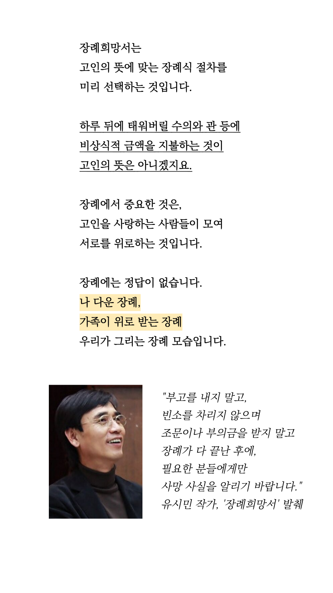

<?
include("include/head.php");
?> 
  <!--step s-->
<div id="normal">

  <div class="stepper_wrapper">
    <div class="stepper_item active">
      <div class="step_counter">1</div>
      <div class="step_name">분위기</div>
    </div>
    <div class="stepper_item">
      <div class="step_counter">2</div>
      <div class="step_name">연명 의료</div>
    </div>
    <div class="stepper_item">
      <div class="step_counter">3</div>
      <div class="step_name">기증 신청</div>
    </div>
    <div class="stepper_item">
      <div class="step_counter">4</div>
      <div class="step_name">수의</div>
    </div>
    <div class="stepper_item">
      <div class="step_counter">5</div>
      <div class="step_name">염습</div>
    </div>

  </div>
</div>
 <!--step e-->
        <!--content s-->
        <div class="container pb-0">
          
            <div class="d-flex flex-column px-4 pt-3 vh-100  "> 
                <div>
                    <h2 class="pb-5">어떤 분위기의 장례식을 원하세요?</h2>
                </div>
                <div class="d-flex gap-3 flex-column"> 

                    <input type="radio" class="btn-check" name="options" id="option8" autocomplete="off" >
                    <label class="btn btn-primary-toggle btn-lg w-100" for="option8">가족 친지와 평화로운 분위기</label>

                    <input type="radio" class="btn-check" name="options" id="option9" autocomplete="off" >
                    <label class="btn btn-primary-toggle btn-lg w-100" for="option9">많은 사람들과 왁자지껄한 분위기</label> 
                </div>
                <div class="d-flex justify-content-between align-items-center pt-40 pb-4">
                    <h2>따르는 종교 절차가 있으신가요?</h2> 
                </div>
                <div class="img_toggle">
                    <input type="radio" class="btn-check" name="options2" id="option17" autocomplete="off">
                    <label class="btn btn-primary-toggle btn-lg w-50" for="option17">
                        
                        무교</label>
                        <input type="radio" class="btn-check" name="options2" id="option18" autocomplete="off">
                    <label class="btn btn-primary-toggle btn-lg w-50" for="option18">
                        
                        기독교</label>
                        <input type="radio" class="btn-check" name="options2" id="option19" autocomplete="off">
                    <label class="btn btn-primary-toggle btn-lg w-50" for="option19">
                        
                        불교</label>
                        <input type="radio" class="btn-check" name="options2" id="option20" autocomplete="off">
                    <label class="btn btn-primary-toggle btn-lg w-50" for="option20">
                        
                        천주교</label> 
 
                </div>
                <div class="fixed_bottom px-3 py-3 d-flex gap-3 bg-white">
                    <button type="button" class="btn btn-lg w-50 btn-gray"
                        onclick="location.href='index.html'">
                        메인으로</button>
                        <button type="button" class="btn btn-lg w-50 btn-primary"
                        onclick="location.href='write_2.html'">
                        다음</button>
                </div>
            </div>
         
        </div>
   <!--content e-->


   <!--show modal s-->
<div class="modal fade" tabindex="-1" id="opinion">
    <div class="modal-dialog modal-dialog-centered">
        <div class="modal-content">
            <div class="modal-header d-none">
                <h5 class="modal-title">Modal title</h5>
                <button type="button" class="btn-close" data-bs-dismiss="modal" aria-label="Close"></button>
            </div>
            <div class="modal-body">
                
            </div>
            <div class="modal-footer px-0 py-0 border-top ">
                <button type="button" class="btn btn-link cl_disabled btn-md" data-bs-dismiss="modal">오늘 하루 보지
                    않기</button>
                <button type="button" class="btn btn-link cl_dark btn-md" data-bs-dismiss="modal">닫기</button>
            </div>
        </div>
    </div>
</div>
<!--show modal e--> 


<script>
    $(document).ready(function () {
        $("#opinion").modal("show");
    });
</script>


   <?
   include("include/footer.php");
   ?>